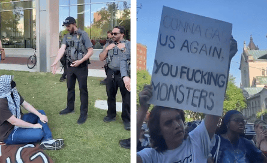
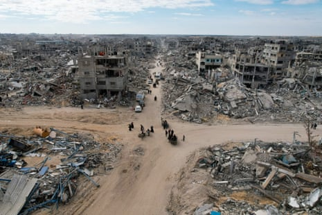
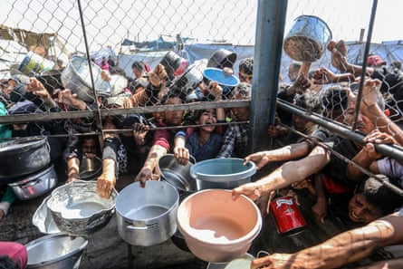
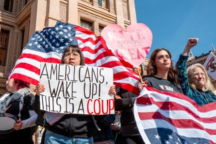
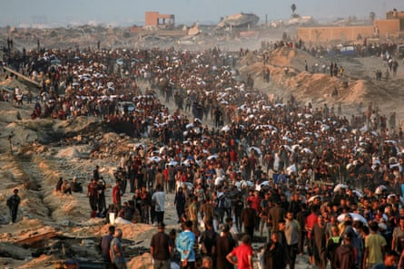

Sereen Haddad is a bright young woman. At 20 years old, she just finished a four-year degree in psychology at Virginia Commonwealth University (VCU) in only three years, earning the highest honors along the way. Yet, despite her accomplishments, she still can’t graduate. Her diploma is being withheld by the university, “not because I didn’t complete the requirements”, she told me, “but because I stood up for Palestinian life.”
Sereen Haddad.Photograph: Olivia Cunningham
Haddad, who is Palestinian American, had been raising awareness on her campus about the Palestinian fight for freedom as part of her university’s chapter of Students for Justice in Palestine. The struggle is also personal for her. With roots in Gaza , she has lost more than 200 members of her extended family to Israel’s war.
She was part of a group of VCU students and supporters who attempted to set up an encampment in April 2024. The university called in the police that same night. Protestors were pepper sprayed and brutalized, and 13 were arrested. Haddad was not charged, but she was taken to the hospital “because of the head trauma that I endured”, she told me. “I was bleeding. I was bruised. Cuts everywhere. The police slammed me down on the concrete, like, six different times.”
But last year’s attempted encampment wasn’t even the reason Haddad’s degree is being withheld. This year’s peaceful memorial of it was. And how that scenario played out, with the university and campus police constantly changing the rules, illustrates something worrisome far beyond the leafy confines of an American campus.
Israel’s war in Gaza is chipping away at so much of what we – in the United States but also internationally – had agreed upon as acceptable, from the rules governing our freedom of speech to the very laws of armed conflict. It seems no exaggeration to say that the foundation of the international order of the last 77 years is threatened by this change in the obligations governing our legal and political responsibilities to each other.
This collapse began with the liberal world’s lack of resolve to rein in Israel’s war in Gaza. It escalated when no one lifted a finger to stop hospitals being bombed. It expanded when mass starvation became a weapon of war. And it is peaking at a time when total war is no longer viewed as a human abhorrence but is instead the deliberate policy of the state of Israel.
The implications of this collapse are profound for international, regional and even domestic politics. Political dissent is repressed, political language is policed, and traditionally liberal societies are increasingly militarized against their own citizens.
Many of us disregard how much has shifted in the last 20 months. But we are ignoring the collapse of the international system that has defined our lives for generations at our own collective peril.
On 29 April 2025, a group of VCU students met on a campus lawn to remember the forcible dismantling of an encampment briefly erected on the same space the year prior. The gathering was not a protest. It was more akin to a picnic, with some students using banners from past demonstrations as blankets. Others brought actual blankets. Students sat on the grass and studied for their finals, tinkered with their laptops, and played cards or chess. A handful of the 40-odd students sported keffiyehs.
It turned out the blankets were a problem.
Almost two hours into their picnic, a university administrator confronted the students over a social media post that had advertised the gathering. (“Come be in community with one another to commemorate 1 Year since VCU’s brutal response to the G4Z4 Solidarity Encampment. Bring picnic blankets, homework/finals, art supplies, snacks, music, games,” a local Palestinian solidarity group had posted .) Because of this post, the university considered the picnic an “organized event”, and since the students hadn’t registered the event, it was deemed a violation of the rules.
The rules at VCU had been changing because of protests for Gaza since February 2024.
The administrator told the students they could relocate to the campus free-speech zone, an area that had been established in August 2024 because of the protests of that year. “An amphitheater next to four dumpsters” is how Haddad described the area to me.
The campus free-speech organization Foundation for Individual Rights and Expression (Fire) is critical of free-speech zones because they “function more like free speech quarantines, banishing student and faculty speakers to outposts that may be tiny, on the fringes of campus, or (frequently) both”.
Rather than move, the students announced a formal end to their gathering, and they remained quietly on their campus lawn. But since the banners they were sitting on expressed a political point of view, the administrator told the students they would have to take them to the free-speech zone, according to Haddad. The lawn should be for everybody, the students countered. Several different conversations with campus police officers and different administrators ensued, with the students being told different rules each time.
Over a dozen campus police officers appeared later that afternoon (as seen in this video ). “You’ve been asked not to have any blankets in the park. You have one minute to collect the blankets and to leave the park. Otherwise, you will be arrested for trespassing,” an officer told them.
But the police continued to change the rules. First the students were told they would have to roll up the blankets and leave. Minutes later, police said they could stay if the blankets were gone. The students removed the blankets and, as the officers were leaving, the students began chanting: “Free, free Palestine!” One raised a sign, referencing last year’s protestors being pepper sprayed by police, that read: “Gonna gas us again, you fucking monsters.” He was arrested. The others became angry and frustrated.
“You know what made this a demonstration?” a student yelled at the police. “When you bring fucking cops to a picnic! That’s what turns it into a fucking demonstration!”
Eight days later, Haddad and another student, identified by the university as leaders, were served notice of policy violations due to the unauthorized gathering. Their degrees were being withheld.
Stills from a video showing police at Virginia Commonwealth University cracking down on a student picnic marking the one-year anniversary of when the university dismantled their pro-Palestinian encampment in Richmond, Virginia, on 29 April 2025.Composite: sjpvcu/Instagram
“When students expose the violence of Israel’s occupation and genocide, institutions like VCU, which are deeply entangled with weapon manufacturers and corporate donors, become fearful,” Haddad said. “So they twist the rules, they rewrite the policies, and they try to silence us … But it’s all about power. Our demands for justice are a threat to their complicity.”
The strategic rewriting of the rules isn’t unique to VCU. It’s taking place across the United States as university administrators clamp down on protests supporting Palestinian rights. In one of many other examples, dozens of faculty members and students were temporarily suspended from Harvard’s library in late 2024 after they sat quietly reading in the library with signs that either supported free speech or opposed the war in Gaza, though a similar protest in December 2023 carried no such sanction.
Had any of these students been protesting Russia’s war on Ukraine, you can be sure these administrations would have responded with adulation. Universities, after all, pride themselves on being the testing grounds for society’s collective values. As sites of contemplation and exploration, they function as incubators for future leaders.
But when it comes to the question of Palestine, a different pattern begins to emerge. Rather than listen to students who want to hold Israel accountable for its actions, those in positions of power in the university are opting to change the rules instead.
Such dubious rule changes are not just for our students. In a damning report published in January, ProPublica dissected the many ways that the Biden administration kept shifting the goalposts in Israel’s favor after 7 October 2023. Remember the threats of sanctions against Israel for invading Rafah ? (It’s a “ red line ,” Biden said.) Or the 30-day ultimatum placed on Israel to dramatically increase the food aid? But nothing happened. Outside briefly pausing a shipment of 2,000lb (0.9 tonne) bombs, the military hardware kept on coming.
People make their way past the rubble of houses in Rafah on 20 January 2025, a day after a ceasefire deal in the war between Israel and Hamas came into effect.Photograph: AFP/Getty Images
The Leahy law requires restricting assistance to military units of foreign governments engaged in gross human rights violations. It has never been applied to Israel. In April 2024, it looked like secretary of state Antony Blinken was about to sanction Netzah Yehuda, a notorious battalion in the Israeli Defense Forces, under the Leahy law. In the end, he punted, and the battalion not only escaped US sanctions, but according to CNN , its commanders were even assigned to train ground troops and run operations in Gaza.
“It’s hard to avoid the conclusion that the red lines have all just been a smokescreen,” Stephen Walt, a professor of international affairs at Harvard Kennedy School, told ProPublica. “The Biden administration decided to be all in and merely pretended that it was trying to do something about it.”
Leahy isn’t the only US law that Israeli impunity is pushing to a breaking point. In late April 2024, the US government’s leading agencies on humanitarian assistance concluded that Israel was deliberately blocking entry of food and medicine into Gaza. The US Foreign Assistance Act requires the government to suspend military assistance to any country that “restricts, directly or indirectly, the transport or delivery of United States humanitarian assistance”. Blinken just ignored the evidence provided by his own government. “We do not currently assess that the Israeli government is prohibiting or otherwise restricting the transport or delivery of US humanitarian assistance,” he informed Congress.
Palestinians trying to receive food from a charity distribution point in Khan Younis, Gaza, on 5 June 2025.Photograph: Anadolu/Getty Images
The rules bend like reeds when it comes to Israel, which in March 2025 also broke the ceasefire that the Trump administration had helped negotiate in January. And now we are witnessing a new level of cruelty: the use of starvation as a weapon of war . Meanwhile Israeli politicians openly call for ethnic cleansing. Bezalel Smotrich, the far-right finance minister, bragged that Israel is “destroying everything that’s left of the Gaza Strip” and that “the army is leaving no stone unturned.” He added: “We are conquering, cleansing and remaining in Gaza until Hamas is destroyed.” And his idea of Hamas is expansive. “We’re eliminating ministers, bureaucrats, money handlers – everyone who holds up Hamas’s civilian rule,” he explained. Killing civilian members of government (as they are not combatants) is a war crime.
The US and the international community, again, do nothing.
Every day, the previously unheard of is not just spoken aloud but also acted upon – precisely because it elicits little reaction. Two retired Israeli air force pilots wrote in the Israeli newspaper Haaretz’s Hebrew edition that “a member of the Knesset even boasted that one of the [Israeli] government’s achievements is the ability to kill 100 people a day in Gaza without anyone being shocked” (an excerpt of the Haaretz article was quoted by columnist Thomas Friedman in the New York Times .)
A Palestinian child suffering from malnutrition is treated by a nurse at the Nasser hospital in Khan Younis in the southern Gaza Strip on 10 July 2024.Photograph: Eyad Baba/AFP/Getty Images
This steady shift of the acceptable has resulted in criminal policies and practices of forcible displacement, mass suffering and genocide, all conducted under passive acquiescence or active complicity of powerful countries. Even the normally reticent Red Cross is speaking out in horror. “Humanity is failing in Gaza,” Mirjana Spoljaric Egger, president of the International Committee for the Red Cross, told the BBC’s Jeremy Bowen recently. “The fact that we are watching a people being entirely stripped of its human dignity should really shock our collective conscience,” she lamented.
Yet, official outrage is at best muted as all that was once considered institutionally solid melts into air.
What is it about Israel that enables it to get away with murder? The United States has long shielded Israel from international criticism and supported it militarily. The reasons offered for that support usually range from the “ unbreakable ” bond shared between the two countries to the power of the American-Israel Public Affairs Committee (Aipac) in Washington. One could reasonably argue that the only thing different about this current war is the scale.
But it’s not just Washington. Israel and the question of Palestine produce incredibly fraught divisions throughout much of the western world. Denmark recently banned children gearing up to vote in a nationwide youth election from debating Palestinian sovereignty. Why?
In a conversation with the New York Times’ Ezra Klein, professor of international human rights law Aslı Bâli offered one explanation for what’s different about Palestine. In 1948, she notes, Palestine was “the only territory that had been slated to be decolonized at the creation of the United Nations … that has [still] not been decolonized”.
South Africa was once in that category. For decades, Palestine and South Africa were “understood as ongoing examples of incomplete decolonization that continued long after the rest of the world had been fully decolonized”. Today, Palestine is the last exception to that historical process – a holdover plainly clear to the people who were once subject to colonization, but that the western world refuses to acknowledge as an aberration.
In other words, for many in the US and much of the western world, the creation of the state of Israel is understood as the fulfillment of Jewish national aspirations. For the rest of the world, the same fulfillment of Jewish national aspirations has rendered the decolonization of Palestine incomplete.
In 2003, the historian Tony Judt wrote that the “problem with Israel [is] … that it arrived too late. It has imported a characteristically late-19th-century separatist project into a world that has moved on, a world of individual rights, open frontiers, and international law. The very idea of a ‘Jewish state’ – a state in which Jews and the Jewish religion have exclusive privileges from which non-Jewish citizens are forever excluded – is rooted in another time and place. Israel, in short, is an anachronism.”
Judt’s idea that Israel is a relic of another era requires understanding how the global push for decolonization significantly accelerated after 1945. The result was a new world – but one that forsook the Palestinians, leaving them abandoned in refugee camps in 1948. This new world, emerging out of the ashes of the second world war, became what we today call “the rules-based international order”, of which international law is a key component.
International law became much more codified in this time as well. The year 1948 was not only the date of the Palestinian Nakba (Arabic for “catastrophe:) and Israel’s independence. It was also the year that the Universal Declaration of Human Rights (UDHR) was passed. Along with the UN Charter of 1945, the UDHR serves as the principal basis of international human rights law.
But what good is a “rules-based international order” if the rules keep shifting?
The truth is that we’ve never really lived in a “rules-based international order”, or at least not the one that most people imagine when they hear the phrase. The idea that international law establishes limits on the actions of states did not prevent the Rwandan genocide. The “rules-based international order” didn’t stop the US’s “ illegal ” invasion of Iraq in 2003. Long before 2023, Israel routinely violated Security Council resolutions . It didn’t stop Hamas from committing its war crimes on 7 October.
The problem with international law is not just the lack of an enforcement mechanism to compel compliance of rogue states. The problem with international law is that “it is more likely to serve as a tool of the strong than of the weak,” the legal theorist Ian Hurd writes in his 2017 book, How to Do Things with International Law.
We tend to think of the law as an agreed-upon limit on our actions. As Dwight D Eisenhower famously said : “The world no longer has a choice between force and law. If civilization is to survive, it must choose the rule of law.”
But what if law is better understood as a system that, yes, restricts behavior but more importantly validates what’s possible? Whoever gets to define the limits gets to define what’s acceptable. As such, the powerful are far more likely to shift the ground of what’s acceptable to their advantage. As Hurd explains, international law “facilitates empire in the traditional sense because strong states … shape the meaning of international rules and obligations through interpretation and practice”.
Though international law generally bans warfare, it carves out an exception for self-defense, and powerful states are the ones that can shift the line on what constitutes legitimate self-defense. (Israel broadly claims self-defense for its aggression on Iran, for example, as Russia explicitly claims self-defense for attacking Ukraine.) In his book, Hurd examines how the US has justified its use of drone warfare and even torture by appealing to international law. International law, for Hurd, is not a system that rests above politics. It is politics.
The point I take from Hurd is not that international law doesn’t exist or that it’s not valuable. Clearly, there’s a need for rules to protect civilians and prevent war. International humanitarian law is also a living and breathing thing that adapts and expands. Additional protocols to the Geneva conventions were adopted in 1977. The Rome Statute that established the International Criminal Court was passed in 1998.
But international law is also repeatedly put under stress, routinely violated, and consistently pushed into the service of strong states. As such, international law in practice is better understood as a constantly shifting line of acceptable behavior. We may now be reaching the point where that line has shifted so far from the founding intentions of international law that the system itself is on the brink of collapse.
Israel’s campaign in Gaza carries the terrifying possibility of such a radical shifting of the line of acceptability that it makes genocide a lawful weapon of war. If you think I’m being hyperbolic, consider what Colin Jones wrote in the New Yorker earlier this year. Jones consulted key lawyers in the American military establishment about their views on Israel’s campaign in Gaza. What he found was a US military that is deeply concerned about being hobbled by international law when prosecuting a future war against a major power such as China – so much so that Israel’s “loosened restraints on civilian casualties” usefully shifts the goalposts for future US conduct.
To the US military, Jones writes: “Gaza not only looks like a dress rehearsal for the kind of combat US soldiers may face. It is a test of the American public’s tolerance for the levels of death and destruction that such kinds of warfare entail.”
What future hell are we currently living in?
In his book, Hurd also illustrates a fundamental difference between domestic and international legal regimes. The expectation we have of domestic law, he says, is that it is “clear, stable, and known in advance”, whereas international law is up to the consent of states.
Trump’s contempt for institutions of international law couldn’t be clearer. He placed sanctions on judges and jurists of the International Criminal Court after arrest warrants were issued against Israel’s prime minister, Benjamin Netanyahu, and former defense minister Yoav Gallant. (He issued similar sanctions in 2020.) He defied the UN Charter by bombing Iran, a sovereign nation not posing an imminent risk to the United States. The global response? A mild rebuke from the French president, Emmanuel Macron, and full-throated support from Nato secretary general Mark Rutte.
His disdain for domestic institutions of law is just as visible. He has invoked phony emergencies to claim “emergency powers” like no president before him, enabling him to get around Congress and, essentially, rule by decree. He deployed military troops in California, against the wishes of its governor, and an appeals court has even authorized his decision. He is walking the line of open defiance of various judicial orders.
From left, Jade Chan and Zoe O’Brien protest Donald Trump on 17 February 2025 in Austin, Texas.Photograph: Brandon Bell/Getty Images
What is happening? It’s tempting to think that we are living in a new era of lawlessness, but that would fail to capture the change staring us in the face. This is not about the lack of law. It’s about the remaking of the law. What Trump and leaders like him seek is not so much to destroy the law as to colonize it, to possess the law by determining its parameters to serve their interests. For them, the law exists to bend to their will, to destroy their adversaries, and to provide an alibi for behavior which, in a better version of our world, would be punished as criminal.
Maybe it’s not surprising that something as vulnerable as international law could crack under today’s pressures. What may be surprising is how we’re also losing our domestic sense of stability, peace and security along with it and how connected the struggle for Palestine is to this domestic dismantling, especially when it comes to free expression. Just ask Sereen Haddad or Mahmoud Khalil , the Palestinian rights activist who spent 104 days in detention for his constitutionally protected political speech and still faces the prospect of deportation.
The convention on the prevention and punishment of the crime of genocide was, like the UDHR, approved in the fateful year of 1948. Its arrival was urgent and necessary after the Nazi Holocaust of the Jewish people, and modern international law was constructed on the understanding that together we in the international community would work together to prevent future genocides. While we have failed to live up to that promise in the past, today it is Israel’s acts of extermination and genocide of Palestinians in Gaza, funded and enabled at every turn by a complicit west, that has contributed the most to the demise of the global, rules-based order. The way it looks today, the system won’t make it to 100 years.
And its collapse can be directly attributed to the hypocrisy with which the world has treated the Palestinians. No other group has been subjected to such a prolonged state of loss in the post-1945 liberal order. Palestinian refugees constitute “the world’s oldest and largest protracted refugee situation” in the modern world. And the demands placed on Palestinians simply to survive get more barbaric by the hour. In Gaza, desperate Palestinians are gunned down by snipers and drones daily as they wait for food. A drought is imminent because Israel’s attacks have destroyed most of the strip’s wastewater treatment plants, sewage systems, reservoirs and pipes. Up to 98% of Gaza’s farmland has been destroyed by Israel. This is a form of total war the modern world should never see, let alone condone.
People carrying sacks of flour walk in western Jabalia on 17 June 2025, after humanitarian aid trucks reportedly entered the northern Gaza Strip through the Israeli-controlled Zikim border crossing.Photograph: Bashar Taleb/AFP/Getty Images
No one knows what will come to replace the international system that is currently collapsing around us, but any political system that prioritizes punishing those who protest genocide rather than stopping the killing has clearly exhausted itself.
If there’s a glimmer of hope in all this rage-inducing misery, it can be found in the growing number of people around the world who refuse to be intimidated into silence. We may have seen a small example of that courage in New York City recently, and I’m not talking only about Zohran Mamdani winning the Democratic party nomination for mayor. That same day, two of Brooklyn’s progressive politicians, Alexa Avilés and Shahana Hanif , were running for renomination. Both supported Palestine, both were relentlessly attacked for their positions on Gaza, and both refused to change their views. Pro-Israel donors poured money into their opponents’ campaigns. Yet both handily won their races.
Multiple factors go into winning any political campaign, but any expressed support for Palestine used to be a death knell. Could it be that we’re on the cusp of change? Maybe Palestinian freedom is no longer a liability but is now a real winning position in politics?
Palestine is perhaps the clearest expression today, as Haddad told me, of how “power feels threatened by the truth.” She continued: “If they are so afraid of a student with a sign or a chalked message or a demand for justice, then we are stronger than they want us to believe.” She better be right. For all our sakes.